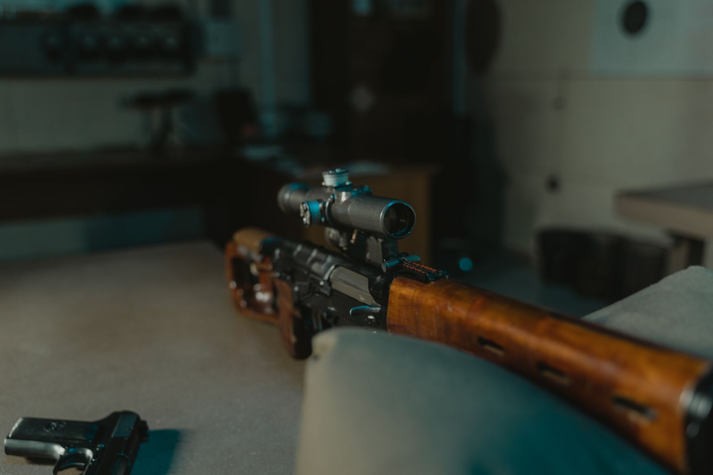

Walk into our shop with a new rifle and a working-man's budget, and odds are the shortlist ends up being a Bushnell or a Nikko Stirling. Both brands have earned their place on South African rifles; they just get there in different ways. Here's our honest, behind-the-counter view after mounting and boresighting hundreds of them.
Where each brand comes from
Bushnell is the American household name — a huge range from entry-level Banner up through Engage, Trophy and Elite lines. Nikko Stirling is the value-focused veteran (Mountmaster, Panamax, Gameking, Diamond) that has quietly sat on top of thousands of SA hunting rifles for decades.
Glass and low-light performance
In bright Karoo daylight you'll struggle to tell them apart. The differences show at dawn and dusk — exactly when kudu move. Like-for-like on price, Bushnell's coatings generally give a slightly brighter, crisper sight picture at last light, especially in the Engage/Trophy tier. Nikko Stirling's Panamax and Gameking lines are perfectly usable in the field but give up a few minutes of shootable light at the margins. If you hunt bushveld edges at dusk, that can matter; for midday springbok in the open Karoo, it won't.
Turrets and tracking
For a set-and-forget hunting zero, both hold up fine — we rarely see either brand come back for wandering zero at hunting round counts. If you plan to dial for distance regularly, the stiffer, more repeatable clicks on the mid-tier Bushnells inspire more confidence than the softer turrets on entry Nikko Stirlings. For most hunters who zero at 100 m or "50 mm high at 100" and leave it, this is a non-issue.
Durability and warranty
Both survive normal hunting knocks and typical SA calibres without drama. Bushnell's Ironclad lifetime warranty on current lines is a genuine advantage — it's a no-questions replacement culture. Nikko Stirling warranties are shorter and handled through the local distributor, though in fairness we see very few failures.
Value for money
This is where Nikko Stirling fights back hard. Rand for rand, you typically get more magnification and bigger objective glass from Nikko Stirling at the same price point. A Panamax 3-9×40 costs meaningfully less than the equivalent Bushnell, and for a .22, an air rifle, or a first hunting rifle that sees a box of ammo a year, that saving is real money better spent on ammunition and range time.
Our verdict
- Tight budget, moderate use, .22s and first rifles: Nikko Stirling — honest glass at an unbeatable price.
- Serious hunting rifle you'll keep for decades: Bushnell mid-tier and up — better low-light glass and the lifetime warranty pays for itself.
- Either way: spend on proper mounts and professional fitting. A R15,000 scope in skew rings shoots worse than a R2,000 scope fitted right — and we fit and boresight in-store.
Look through them side by side
The only real test is your own eye. Come compare them at the counter — we'll fit and boresight whatever you choose.
Ask About Scopes Optics & Gear